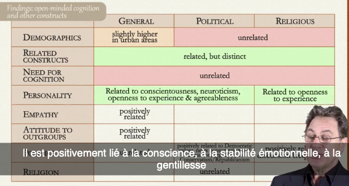
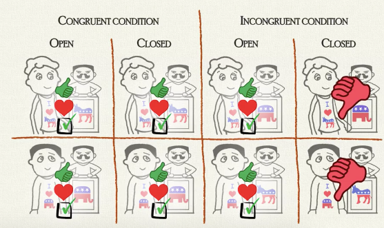
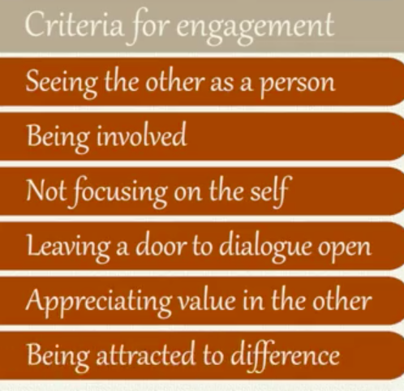
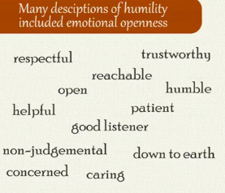

Dr Cristine Legare – University of Texas (Austin)
Two competing drives that motivate : CONFIRMATION (being skeptical) and DISCOVERY (not skeptical at all). So there is tension between those two drives, but you need both.
How do children use both? How do they learn? Explain? Modify their beliefs?
[Intellectual humility is a state of open-mindedness, being receptive, revise beliefs, and have the ability to modify and revise.]
How do we encourage discovery?
Fundamental task: explain why things happen. Children have very sophisticated causal knowledges. CAUSALITY is a key notion.
Active participants of their learning.
Self-explanation effect: when you explain to yourself you know more. Better benefits than being told if you are right or wrong.
Description / Observation vs. EXPLANATION.
Explanation guides and focuses attention. Enables to identify causal mechanisms, and develop coherent conceptual systems. Allows to generalize to new situations.
Understanding and memory are more efficient when one has a causal explanation.
Observation enables a better perceptual memory.
To be humble, you need to be willing to be wrong. What information make children revise their beliefs? When we explain: not all but a specific explanation. Curious not on everything but want to explain everything. Inconsistent result is more interesting to explain than coherent. Explaining consistency: crucial mechanism.
Children prefer to explore inconsistent outcomes that they have explained.
Explanation and exploration reinforce each other. Explanation guides the exploration.
Inconsistency motivates. The kind of uncertainty matters. If you can imagine sophisticated explanations, you are better at problem solving. More sensitive to inconclusive evidence.
The process of revising beliefs guides future actions. The more you show inconsistency, the more engaged children are.
Information give to children are usually a list of coherent facts. It is the worst way of implying them.
Professor Frank Keil – University of Pennsylvania
Three definitions of intellectual humility: appropriate sense of one’s present knowledge limits, appropriate sense of one’s future knowledge limits, appropriate sense of one’s cognitive abilities (problem solving for example).
Arrogance is an inflated sense of knowledge, over-estimated confidence in ability to know in the future, or over-estimated confidence in one's cognitive ability. Confidence, superiority, pride and thinking one is better than another.
Why arrogance? Two factors: desire to enhance self impression + cognitive biases and heuristics (that make us fall into arrogance even if we don't want to).
Heuristics : shortcuts in thinking that enable quicker thinking, computationnaly, less intense processing. Bias: shortcut that don't lead to truth.
2 kinds of biases: that can create humility (less frequent) or arrogance.
Base-rate neglect: forget basic information. Conjonction fallacy, availability heuristic, representative heuristic => can lead to humility or arrogance.
General overconfidence effects (hindsight bias ("i knew it all along"), attribution bias ("it's me when it works, the context when I fail"), confirmation bias (seeking for proofs that show I am intelligent)), developmental overoptimism, knowledge driven effects (illusion) => lead to arrogance.
Developmental overoptimism. Child optimism about his/her future abilities. It's a protective optimism, that protects from failure.
At any age is thought that moral knowledge is stable and does not need much study. Is it a form of arrogance or rather intellectual exhuberance?
Illusory of explanatory depth (knowledge driven effect)
sens of understanding more deeply than neighbour. This illusion is different for different kinds of knowledges. Why do we have this kind of illusions? People can use things and think it's pretty much the same as knowing how things work. Relative difficulty of self testing. We rarely give ourselves full explanations.
Illusion of argument justification
How well can we justify arguments. Think you know better when you care about (e.g. environmental issues), but it's wrong.
Illusion of insight
Feeling that some types of evidence are better quality (hard science) than others (human sciences).
When I know something, I think many (more than really) other people know it.
I think I know better when it's explained in terms of science.
Illusions of the outsourced mind
Believe individual competence is greater than it is. You know the meaning of gold but in deference to an expert who could say if it is fool or true gold. Linked also to Internet research. I think I know it because I can read it in 5 seconds. Without Internet my knowledge seems to be shrinking.
People underestimate outsourcing and overestimate intellectual autonomy.
How to reduce intellectual arrogance without making people feel terrible about what they know?
Professor Victor Ottati – University of Loyola (Chicago)
Introduction
Intellectual humility can be defined as an awareness of one's own knowledge limitations coupled with openness to information, even information that contradicts one's pre-existing opinions or expectations. And so, you can see that open-minded cognition is an important component of intellectual humility. Open-minded cognition can be regarded as a cognitive style ranging from closed-minded to open-minded cognition. Closed-minded cognition is directionally biased. That is it's a tendency to select, in other words pay attention to, interpret and elaborate upon information in a manner that reinforces the individual's preexisting opinions or expectations. Open-minded cognition, on the other hand, is directionally unbiased. Open-minded cognition is not the same as a high amount of thinking.
We did the same thing for the political and religious scales as well. Open-minded cognition can be defined as a cognitive style involving the manner in which individuals select, that is pay attention to, interpret and elaborate upon information.
Open-minded cognition: relation with other constructs
That is participant's individuals tend to endorse open-minded cognition in the general or in abstract terms. But when it comes to more specific domains such as politics and especially religion, average levels of open-minded cognition are somewhat lower or somewhat more closed-minded.

Interestingly, open-minded cognition is uncorrelated, unrelated to most demographic measures. OK. So in contrast to popular stereotypes. For example if you look at age, old people are not more dogmatic than young people. Gender also, we do not see a tendency for example, for females to be more open-minded than males. People who live in cities tend to be slightly more open-minded than people live in the country at least within our U.S. sample.
It's positively correlated with need for closure, positively correlated with a measure called actively open-minded thinking. It's negatively correlated with dogmatism and intolerance of ambiguity which you would all expect in terms of the directions of these correlations. Another interesting thing is the zero correlation between political tolerance and open-minded cognition.
The more you pay attention, the more interested you are in politics, the more you discuss politics. You tend also to be somewhat more open-minded. Interestingly, when we look at the relationship between open-minded cognition and various religious measures we pretty much obtained nothing. These are as I said since these have no stars against them essentially zero correlations. Specifically, empathic concern for others and more favorable attitudes towards minority outgroup members. So open-minded cognition is a measure of cognitive style but it predicts empathic concern which is an the emotional component of empathy, which makes sense. The more open-minded you are—willing to consider another person's viewpoints even if they differ from your own— the more likely you are to empathize with them.
The flexible merit standard model
So you have a certain external cue, which activates a social norm about what one feels normally obligated to respond according to, at which in turn elicits a personal level of open minded cognition that the individual adopts.
Open minded cognition is malleable, that it varies across situations depending upon what we call message tenability.
In addition to measuring situation specific open minded cognition—how open minded one indicates they would be in this situation— it's important also to measure perceptions of the social norms that are activated in this situation, the extent to which one believes one should be open minded in this situation.
Individuals who are high in situation specific open minded cognition are also more likely to pay attention to political information that contradicts the pre existing political opinions.
The message tenability effect
We argue that in some situations, what we call open situations, people encounter a tenable message. This means people encounter viewpoints that do not blatantly contradict mainstream values. In other situations, people find themselves in what we call a closed situation containing untenable messages. This would be a situation where an individual encounters untenable viewpoints that involve extremely unrealistic claims. The message tenability effect is basically that situation specific open minded cognition will be higher when you're in a situation where you're exposed to predominantly tenable messages than when you're in a situation where you're exposed to predominantly untenable messages.
This is the message tenability effect that we've demonstrated. Perhaps the most fundamental effect of the situation an open minded cognition, measured at the situation specific level.
The reciprocal nature of open-minded cognition
The reciprocal open-mindedness effect and the reciprocal politeness effect. In both cases, some situational cue activates the normal reciprocity which in turn has implications and therefore influences situation specific open-minded cognition.
Open-mindedness is considered polite, so I am more likely to be open-minded about your views, if you’re polite to me.
Your reciprocal open-mindedness effect emerges if you are conversing with someone who's open-minded toward you, you feel obligated to be open minded toward them, and therefore you are open minded toward them. If they're close minded toward you, you feel as though you're entitled to be close-minded toward them. We also obtained evidence of the reciprocal politeness effect. If someone is polite toward me, I feel obligated to be open-minded when listening to them speak.
However, if someone is impolite toward me, I feel as though I'm entitled to be close-minded when listening to them speak.
The earned dogmatism effect
So according to The Earned Dogmatism hypothesis, success elicits self-perceptions of high expertise which activates a social norm that entitles oneself to be close minded which then in turn triggers a more closed minded response. In contrast, failure elicits self-perceptions of relatively low levels of expertise, which activates a social norm that prescribes open mindedness, which triggers a more open minded cognition.
That is, situations that increase self-perceptions of high expertise, for example, success, engender a more closed-minded and dogmatic style of thinking. So herein lies the trouble with success and winning. It can produce a more dogmatic pattern of thinking.
The attitude justification effect
Individuals tend to think that open-mindedness is more appropriate and virtuous when it’s likely to reinforce their personal views.
Open-mindedness can become a bias (paradoxically).

When the participant viewed a politician on the other side, they preferred the candidate or the politician when the politician was open minded to close minded.
That is, they viewed an open minded politician as more appropriate, more virtuous, they liked him more, and were likely to vote for him than if he was close minded.
In the congruent politician condition or the congruent candidate condition this effect vanished. Ratings of the open and closed minded candidate were essentially the same. They no longer said they preferred the open minded politician over the closed minded politician.
'Oh, we prefer an open-minded candidate than a closed-minded candidate' But when they're on our side, this effect kind of goes away. It's kind of okay if you're closed-minded. You're rated about just as well, as someone who's open minded, if they are on your own side.
Essentially, what does this say? It says that close mindedness is not a sin, when it comes to the people of your own political theology or party.
Professor Vasu Reddy – University of Portsmouth - Psychology
Predominance of rationalism: it’s a curious fact.
Why should we actually put rationalism into a very small confined space rather than let it be the key to understanding everything human? Well one reason is that if you look at development, at very many different aspect of development, people have generally tended to think about these aspects of development as being thought-led. Take self-conciousness, people think about self-conciousness as being that which children get when they are able to think about themselves, when they are able to have a concept of self. And yet there are other people who argue, that's not where it begins. It ends up there and that thought keeps developing, but feeding into that thought or into that concept must be a whole host of other emotional experiences and emotional developments. Or take moral judgments, we're all very familiar with this phenomenon that we pronounce upon the morality or the immorality of capital punishment or corporal punishment, or whatever you want to call it, call them. But what usually happens in there is that we have a gut reaction first to any one of these phenomena, and then we justify them in what are palatable conceptual terms.
In fact, emotion is the key thing to understand.
Traditional approach on humility:
Narrative humility basically argues that when you are in an encounter with a person from another culture, (it's always other cultures, it's never us) when you are in such an encounter, what you are doing is not keeping your own judgment but actually putting yourself out there in that conversation, not just listening to the other person create their story, but kind of co-creating their story with them without dominating them and without letting them out, so that they just are asked to do it, to write their story, tell their story on their own. Some kind of a participation in that dialogue.

There's two issues going on here in understanding what it means to be involved and why this is actually relevant to understanding humility. One is that genuine involvement requires some degree of honest expression of the self, some degree of being present to the other person oneself. It's some degree of showing oneself to the other. And second, there is a necessary circularity between the involvement of yourself, how much you put yourself on the line and how much the other gets involved with you.
There needs to be an acceptance of multi-dimensionality, of seeing the person present in the moment, although you do need to also go beyond that as we will speak about that at another point in time. And the last thing, the last criterion that I want to talk about is attraction to difference.
Openness and humility correlate actually reasonably well (in a study).

Perhaps it's this partial seeing which is responsible for the plasticity and flux of engagement, and what Buber called confirmation of the other person. In other words, confirmation of what they could be rather than mere acceptance of what they are. So there's a some kind of an almostness, which is necessarily present in engagement. It's necessarily present in seeing the other persons and maybe it is necessary also for humility.
the friend was telling a story and the story kind of almost despite myself got me laughing. And there was at that moment of laughter, there was a connection which it felt at that time as if I was suspending my, actually I suppose you could call it an arrogant withholding of myself and letting go despite the fact that we just didn't see eye to eye. Despite that fact, I suspended my arrogant holding of myself and let go to allow engagement.
2022-01 : Constituendi
Retour à l'accueil des fiches philo
Retour à l'accueil des fiches de lecture de philo
Retour à l'accueil général